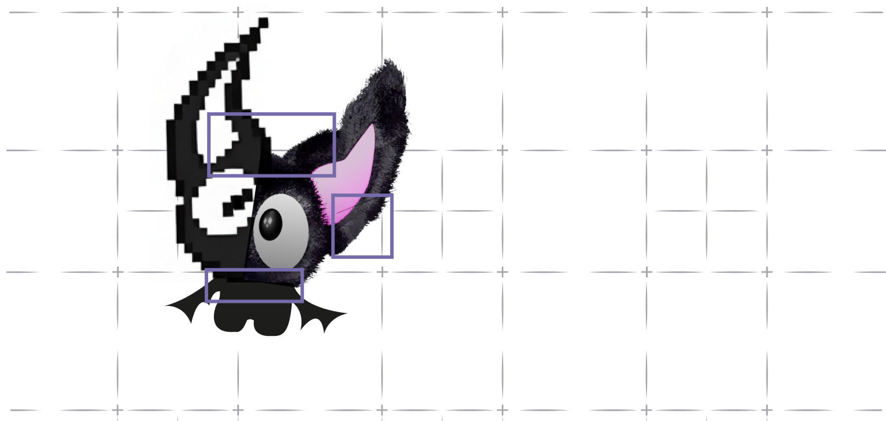
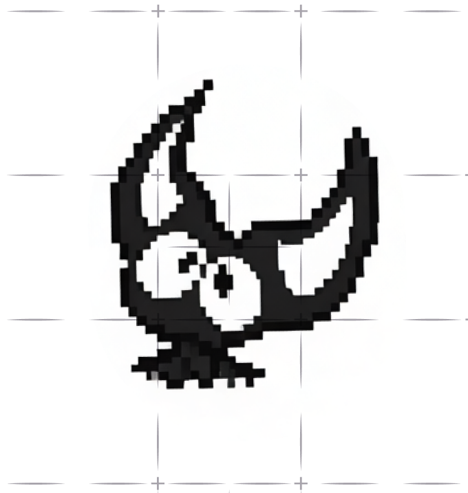
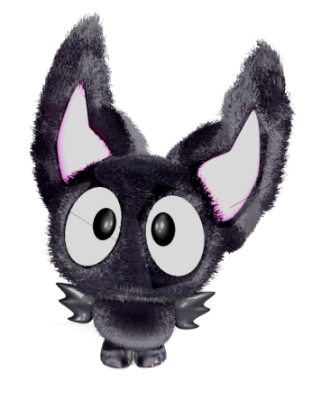
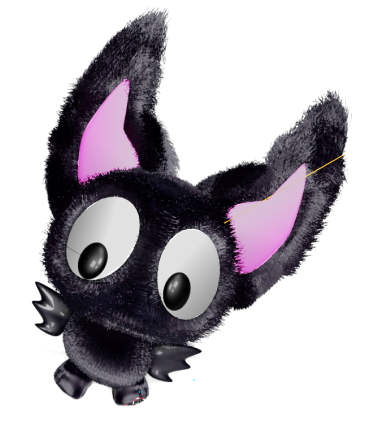

ДЭЙВ
с этим малышом у нас долгая история

ИСТОРИЯ ПЕРСОНАЖА
«Период зарождения дэйбэт в начале цифровой эпохи»
Самый первый образ Дэйва появился тогда, когда компьютеры только начинали входить в жизнь, экран был квадратным, а графика — пиксельной.
Это было время эксперимента и открытия, когда никто еще не знал, во что все это вырастет.
Пиксельный Бэт — это самая первооснова бренда. Как первый черновик, который со временем стал узнаваемым.

ПЕРИОД СТИЛЯ И САМОИДЕНТИЧНОСТИ
На этапе 2D-версии Дэйв уже перестает быть просто документом с формами. Это время, когда бренд начинает осознавать свой характер и визуальный язык.
2D-Бэт — это образ, в котором появляется индивидуальность. Он становится более выразительным и узнаваемым.
Именно с 2D-Бэта начинается тот период, когда бренд все отчетливее заявляет: каждый бэт — уникален, а визуальная форма — лишь способ подчеркнуть эту индивидуальность.
ПОЯВЛЕНИЕ ЖИВОГО ГЕРОЯ
Следующий шаг — выход в трехмерный мир.
Бэт обретает объем, фактуру и мягкость — становится почти осязаемым существом. Теперь он не просто персонаж, а герой мира, в котором живут бэты.
Это этап, где бренд из графической системы превращается в полноценную вселенную со своей вселенной.


ДЭЙВ — НЕ ПРОСТО ПЕРСОНАЖ. ОН ЧАСТЬ ВСЕЛЕННОЙ ДЭЙБЭТ